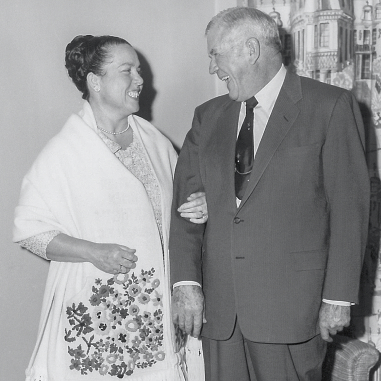
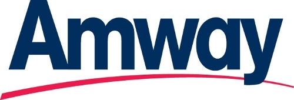
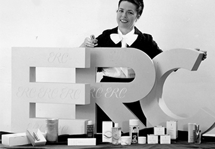
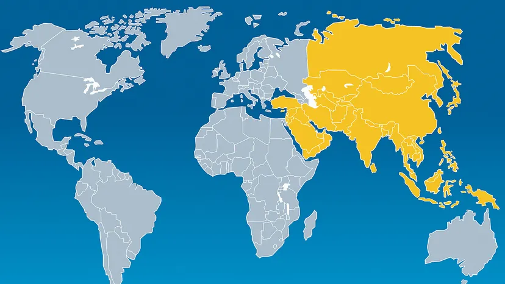
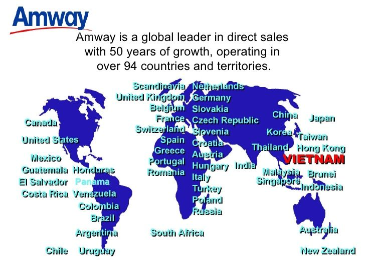
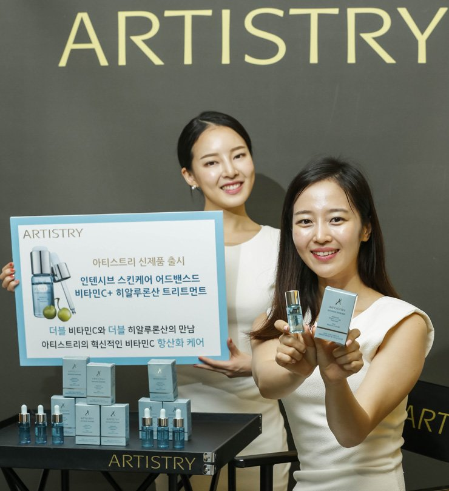
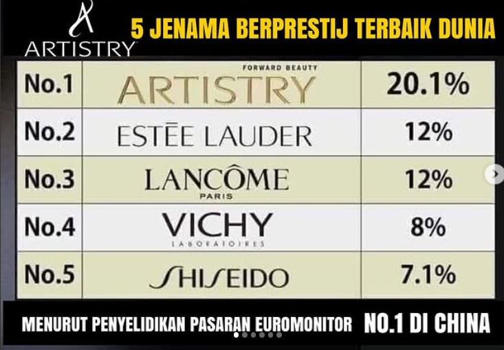
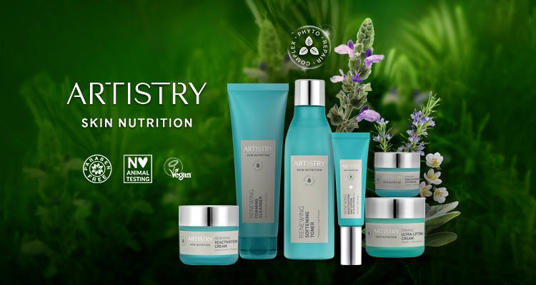

Our Journey
Amway was founded in 1959 by two visionaries, Rich DeVos and Jay Van Andel, in Ada, Michigan. Since its inception, Amway has grown into one of the largest direct-selling companies in the world, offering high-quality products in nutrition, beauty, and home care.
With a focus on empowering individuals to build their businesses, Amway has transformed millions of lives globally. Here's a look at our incredible journey:

1958
Edith Rehnborg, wife of Nutrilite founder Carl Rehnborg, launches her own line of cosmetics - Edith Rehnborg Cosmetics as part of the Nutrilite company.

1968
The first generation of ARTISTRY Color Cosmetics is created by the Amway company.

1972
Rehnborg Cosmetics and ARTISTRY unite under the ARTISTRY name, keeping key products from each line.

1976
ARTISTRY brand goes global, expanding into Australia, Hong Kong, Malaysia, France, the Netherlands, the United Kingdom and West Germany.

1980S-90S
Amway opens state-of-the-art cosmetics plant in Ada, Michigan.
New skincare technologies, body care products and innovative makeup collections are created and launched.
ARTISTRY brand's global expansion continues in Asia, Europe and South America.
Amway opens state-of-the-art cosmetics plant in Ada, Michigan.
New skincare technologies, body care products and innovative makeup collections are created and launched.
ARTISTRY brand's global expansion continues in Asia, Europe and South America.

1995
ARTISTRY products launch in 28 markets worldwide, including Indonesia, Portugal, Argentina, Czech Republic, Slovakia, and Uruguay

2000S
ARTISTRY skincare introduces collections still loved today: - Creme L/X, INTENSIVE SKINCARE, YOUTH XTEND, and more.
Our signature "crescendo" packaging is introduced, introducing Artistry™ to a new generation.
ARTISTRY skincare introduces collections still loved today: Creme L/X, INTENSIVE SKINCARE, YOUTH XTEND, and more.
Our signature "crescendo" packaging is introduced, introducing Artistry™ to a new generation.

2018
The first generation of ARTISTRY Color Cosmetics is created by the Amway company.

2021
ARTISTRY Healthy Beauty transforms the way we look at beauty.
Beauty is born with the launch of ARTISTRY SKIN NUTRITION, offering products that work like supplements for the skin to visibly transform skin health.